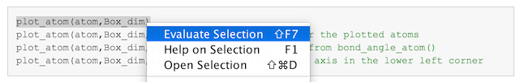

The atom script library
Below is links to all functions, sorted after topic/purpose
Contents
Version
3.00
Contact
Please report problems/bugs to michael.holmboe@umu.se
How-to cite the atom library?
- The atom library has been described in the following paper: atom: A MATLAB PACKAGE FOR MANIPULATION OF MOLECULAR SYSTEMS, Clays and Clay Minerals, Accepted November 2019. DOI:10.1007/s42860-019-00043-y
How-to use these documentation pages
You can read and browse through these html pages in any browser you want, but you could also use these html files (which are part of the distribution) interactively via MATLAB's own browser by executing the code line by line after highlighting the code (using right-click) and choosing 'Evaluate selection' as illustrated below - or just press 'Shift+F7' as illustrated in the figure below.
